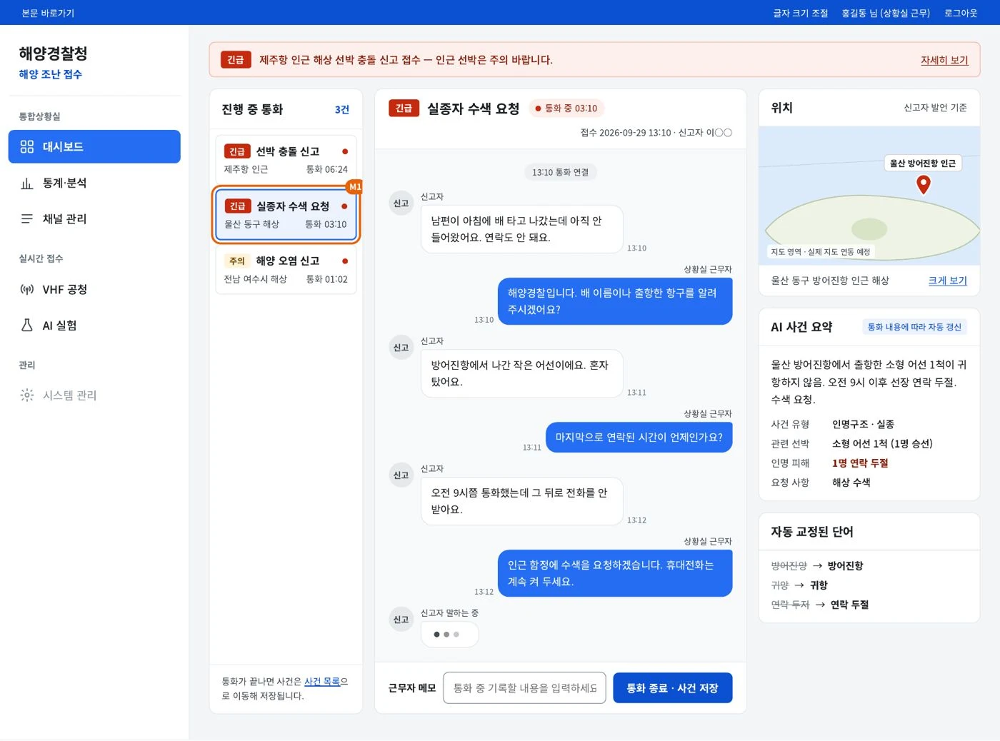
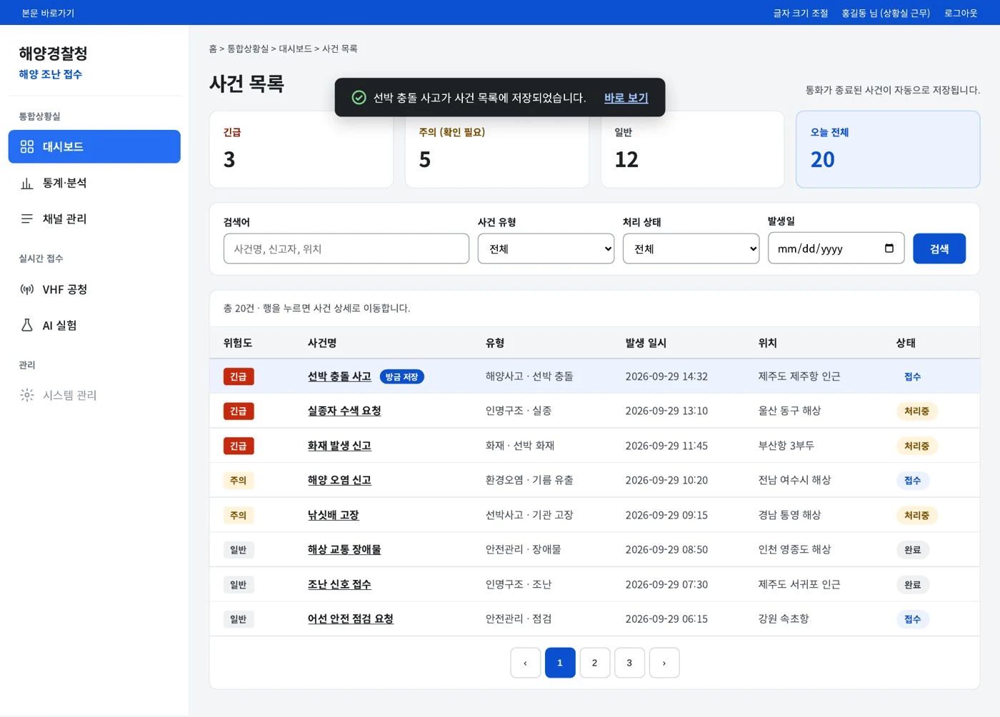
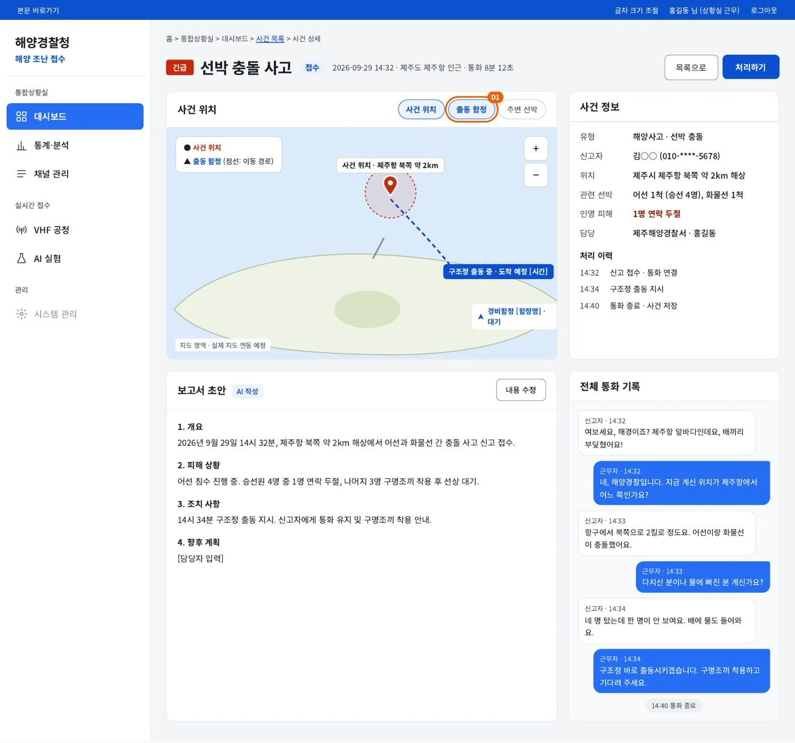
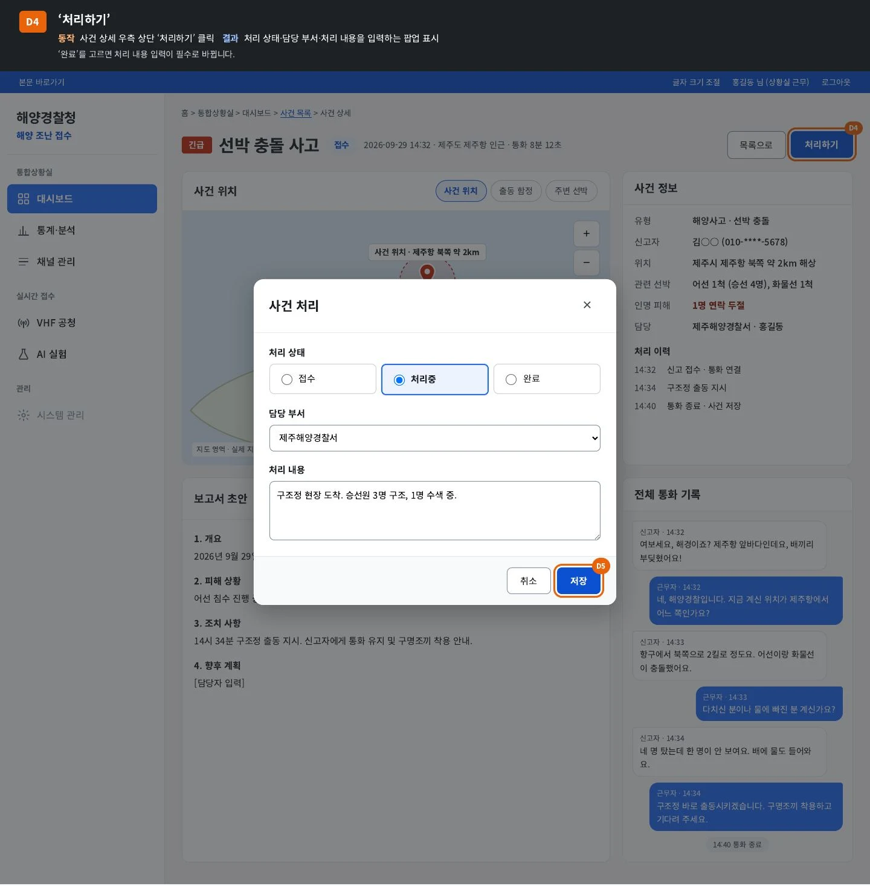
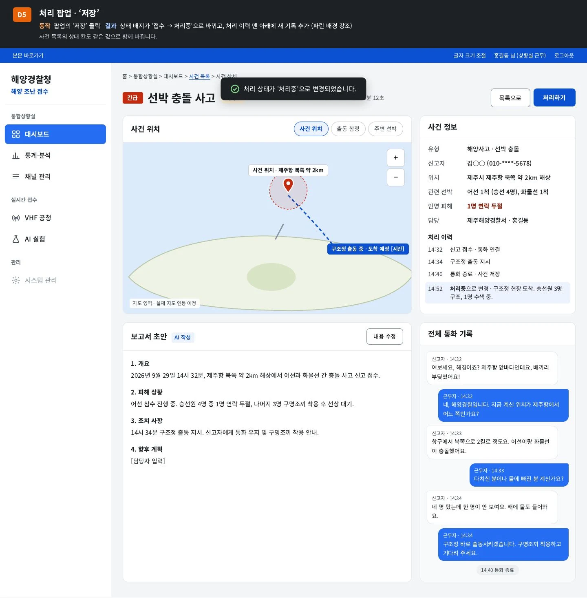

작업 목록으로
상황실 UI 설계, 진행 중
신고 통화가 이어지는 동안, 사건이 화면 위에서 정리되도록
해양 조난 신고 통화를 실시간 대화, AI 사건 요약, 위치 지도로 한 화면에 동시에 정리하는 해양경찰청 통합상황실 화면을 기획하고 디자인했습니다.



설계하며 정한 것들
- 통화 종료는 한 번 더 묻습니다사건명, 위험도, 위치, 통화 시간을 보여 주는 확인 팝업으로 실수로 끊는 일을 막았습니다.
- 근무자 메모는 내부 기록입니다신고자에게 전달되지 않고 대화 흐름 안에 표시되며, 저장하면 처리 이력에 함께 남습니다.
- 빈 표 대신 다음 행동을 보여 줍니다검색 결과가 없으면 안내와 조건 초기화 버튼을 띄우고, 목록으로 돌아와도 검색 조건은 유지됩니다.
- AI 초안은 사람이 확정합니다보고서 초안을 항목별로 고칠 수 있고, 저장하지 않고 나가면 확인 팝업을 띄웁니다.
- 상태는 한곳에서 바꿔도 모두 맞춰집니다처리 상태를 저장하면 배지, 처리 이력, 목록의 상태 칸이 함께 갱신됩니다.
- 권한이 없는 메뉴도 자리는 그대로시스템 관리처럼 권한이 없는 메뉴는 회색 비활성으로 표시했습니다.
화면 속 신고 내용과 인물, 함정 정보는 모두 설계용 가상 데이터입니다.
해양경찰청 통합상황실 UI 버튼 동작 정의서



